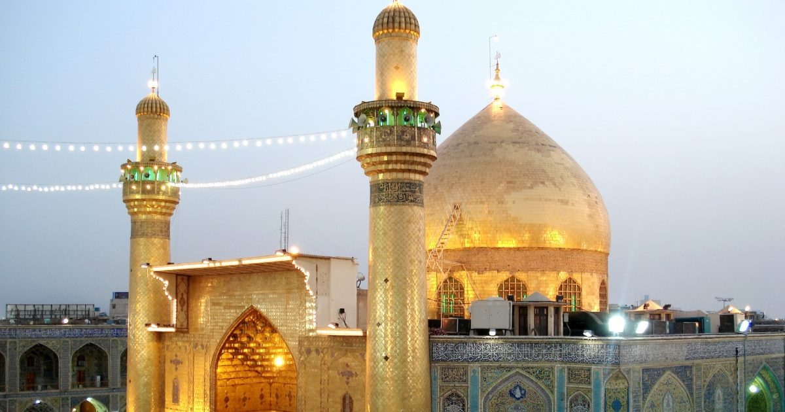

The city of Najaf is one of the most sacred places in the Islamic world and holds deep historical, cultural, and religious importance. At its heart stands the magnificent shrine of Imam Ali, the cousin and son-in-law of the Prophet Muhammad, and the first Imam for millions of Muslims. The shrine has been an important destination for scholars, travelers, and worshippers for more than a thousand years. Its golden dome, large courtyards, and beautifully decorated halls stand as a symbol of faith and architectural craftsmanship. Over centuries, Najaf became a center of knowledge, with its renowned religious schools attracting thousands of students from different parts of the world.
Beyond its spiritual role, Najaf is a city rich in heritage and stories. The nearby Valley of Peace (Wadi Al-Salam) is one of the world’s largest and oldest cemeteries, further adding to the city’s unique identity. Visitors come not only to pray but also to appreciate the artistic tiles, hand-made decorations, and historical expansions that shaped the shrine into the landmark it is today. Najaf remains a place where tradition, devotion, and history meet.
Facts
- Location:Najaf, Itaq
- Year Built: 7th century
- Type: Religious shrine
More Photos
